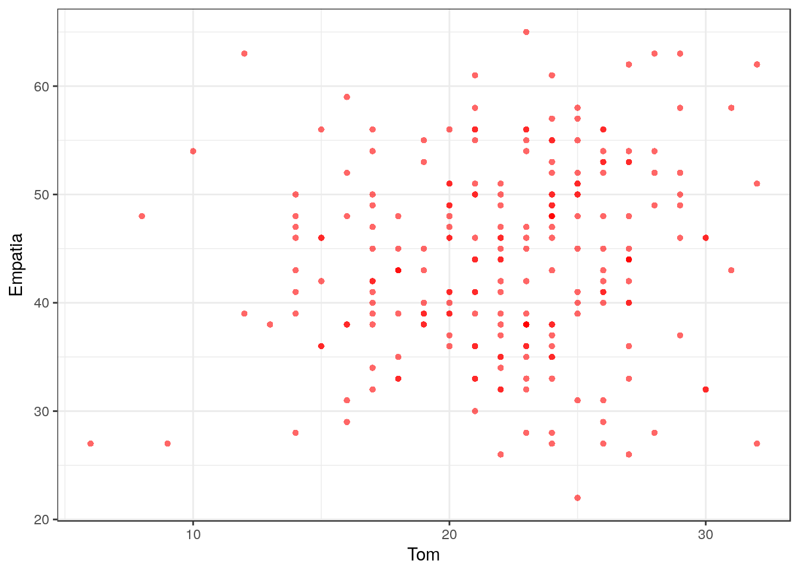
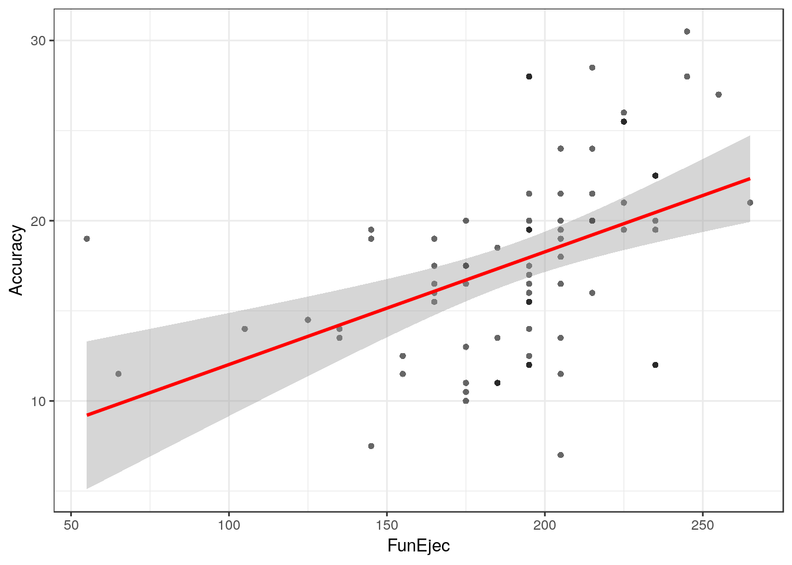
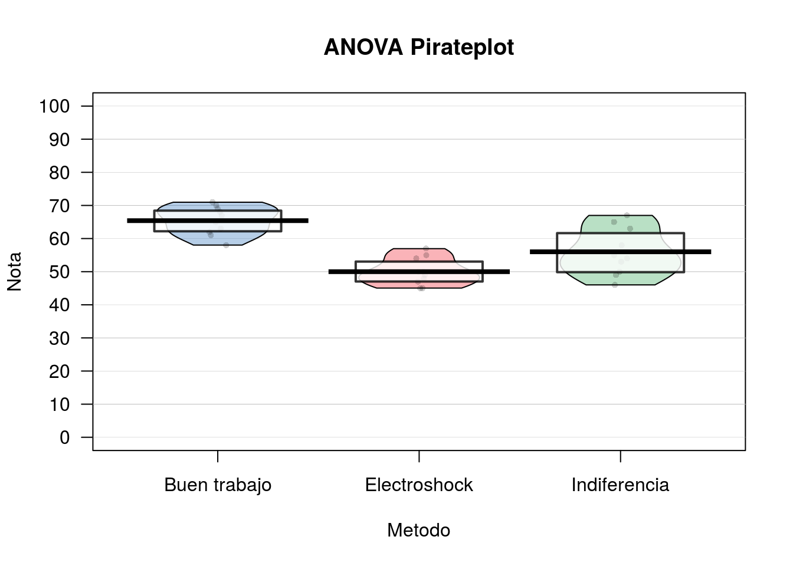
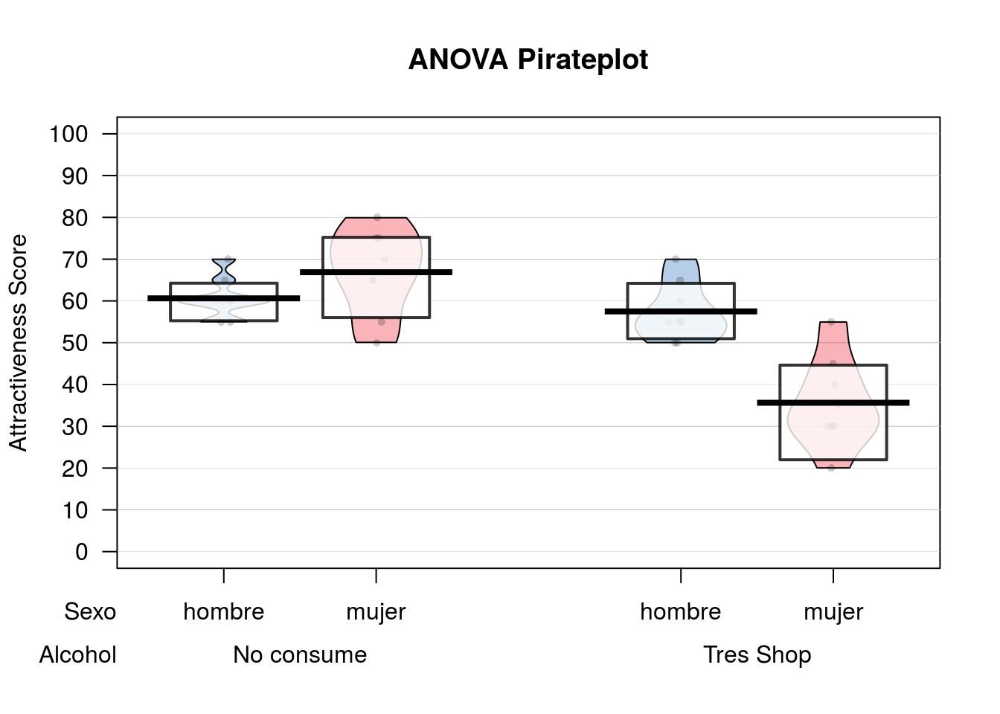
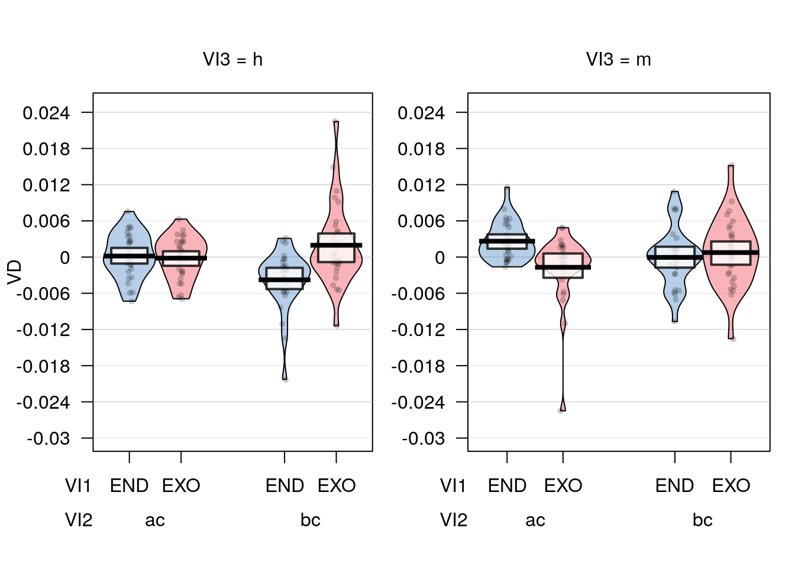
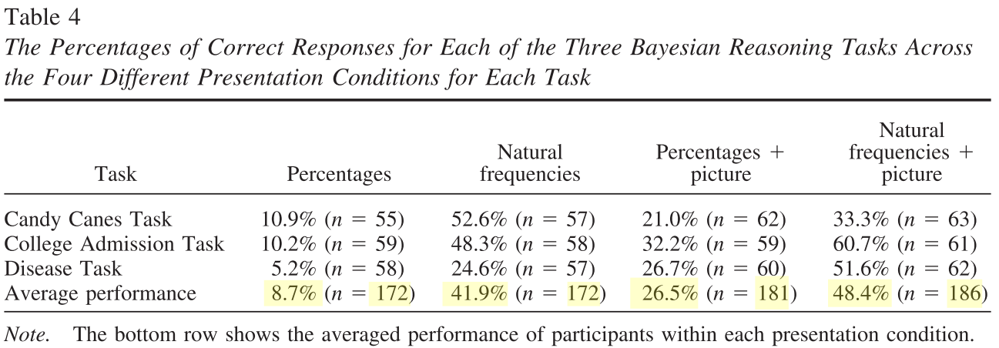
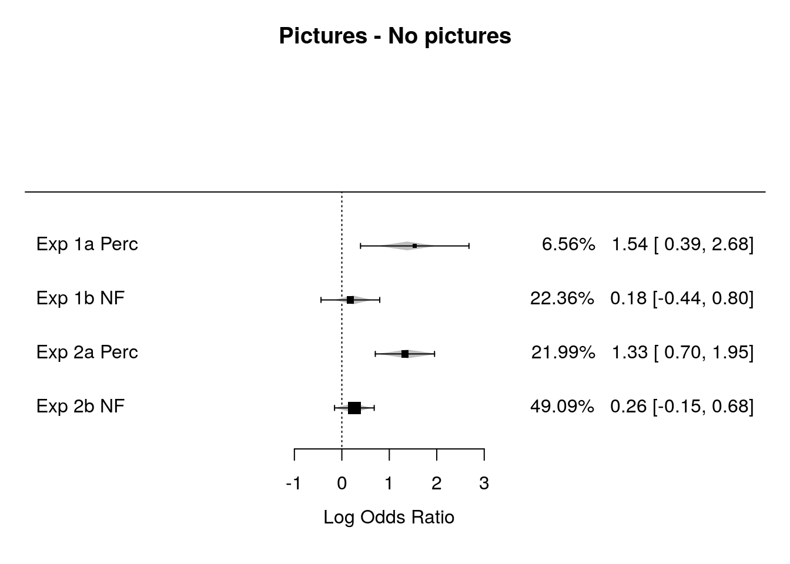

9 Estadistica inferencial
WIP: REVISAR PAQUETE AFEX
- Permite definir variables intra y entre… y sacar posthocs!
https://cran.r-project.org/web/packages/afex/afex.pdf
a = aov_ez(“ID”, “VD”, datos_long, within = c(“VI1”, “VI2”, “VI3”))
lsmip(a, VI1 ~ VI2 * VI3)
lsmeans(a, “VI1”, contr = “pairwise”) lsmeans(a, “VI2”, contr = “pairwise”) lsmeans(a, “VI3”, contr = “pairwise”)
lsmeans(a, c(“VI1”, “VI2”, “VI3”), contr = “pairwise”)
Why Psychologists Should Always Report the W-test Instead of the F-Test ANOVA https://psyarxiv.com/wnezg
WIP: REVISAR
Luego de tener algo parecido a una base de datos ordenada, y haber examinado y vizualizado nuestros datos, es posible que quieras analizarlos.
Para esto aprenderemos algo sobre la lógica de contrucción de modelos y formulas con los cuales podremos armar varias de las pruebas estadísticas clásicas y facilitara la comprensión de otras funciones más complejas como las relacionadas a Modelos re regresión más complejos y Modelos de Ecuaciones Estructurales.
##Algo sobre Modelos y Fórmulas En terminos sencillos, un modelo es una conjetura sobre que tipo de relación tienen las variables en juego.
Por ejemplo yo podria suponer que a medida que aumenta el consumo de alcohol, nuestra percepción de belleza decae.
R tiene sencillas fórmulas para representar este tipo de relaciones.
Si nosotros pensamos que el consumo Alcohol predice el Atractivo de la persona con la que filteamos, podemos formularlo como un modelo de la forma:
Si además pensamos que el Sexo tambien puede ser un predictor, modificamos el modelo inicial:
En el caso de que 2 variables, Alcohol y Sexo sean predictores, es posible pensar que estas pueden interaccionas. Podemos agregar la interación de varias formas:
#versión extendida
formula = "Atractivo ~ Alcohol + Sexo + Alcohol*Sexo"
#versión corta
formula = "Atractivo ~ Alcohol*Sexo"En resumen, todo lo que esta a la derecha del simbolo ~ es considerado un predictor o variable independiente, y todo lo que esta a la izquierda es una variable de resultado o una variable dependiente. No utilizamos el simbolo =, <- o == ya que no estamos ni asignando ni haciendo una equivalencia lógica, y podriamos confundir a R.
Existen casos (por ejemplo, correlación o chi-cuadrado) en donde no hay una predicción propiamente tal. En estos casos se elimina del modelo la variable de resultado:
##Preparación de datos y packages
Para muchos de los análisis que vienen a continuación hemos creado una base de datos, la cual puedes descargar Aquí.
#Packages
if (!require('pacman')) install.packages('pacman'); library('pacman')
p_load(tidyverse, yarrr, car)
#Importar dataframe
df = read_csv("Data/08-Data_analysis/ANOVA_1.csv")## Parsed with column specification:
## cols(
## Id = col_integer(),
## AccuracyIz = col_integer(),
## Moral = col_integer(),
## Tom = col_integer(),
## Empatia = col_integer(),
## Sexo = col_integer(),
## Edad = col_integer(),
## AccuracyDer = col_integer(),
## AdapSoc = col_integer(),
## FunEjec = col_integer()
## )## # A tibble: 237 x 10
## Id AccuracyIz Moral Tom Empatia Sexo Edad AccuracyDer AdapSoc
## <int> <int> <int> <int> <int> <int> <int> <int> <int>
## 1 1 34 1 29 63 0 62 13 40
## 2 2 13 NA 23 55 0 53 8 43
## 3 3 20 1 26 27 0 18 14 38
## 4 4 24 1 21 33 0 40 14 48
## 5 5 20 1 18 35 1 65 15 48
## 6 6 2 0 23 38 NA NA 12 35
## 7 7 13 1 19 38 0 56 5 16
## 8 8 27 1 15 42 1 70 8 41
## 9 9 37 1 23 36 0 43 23 38
## 10 10 27 0 20 51 1 52 9 24
## # ... with 227 more rows, and 1 more variable: FunEjec <int>#Recodificar variable sexo de numérico a factor con etiquetas
df = df %>% mutate(Sexo = ifelse(Sexo == 0, "mujer", "hombre")) %>% mutate(Sexo = as.factor(Sexo))##Prueba t para muestras independientes
###Contando la historia…
Evaluación de diferencias por Sexo en una prueba de Teoría de la mente Tom
###Test
#En primer lugar comprobamos el supuesto de homogeneidad de varianzas
#levene test {car} para homogeneidad de las varianzas
leveneTest(df$Tom ~ df$Sexo)## Levene's Test for Homogeneity of Variance (center = median)
## Df F value Pr(>F)
## group 1 0.7558 0.3856
## 228##
## Two Sample t-test
##
## data: Tom by Sexo
## t = -2.4618, df = 228, p-value = 0.01456
## alternative hypothesis: true difference in means is not equal to 0
## 95 percent confidence interval:
## -2.6763463 -0.2967329
## sample estimates:
## mean in group hombre mean in group mujer
## 21.28070 22.76724#Reporte descriptivo y Vizualización
df %>%
na.omit(Tom) %>%
group_by(Sexo) %>%
summarise(mean = mean(Tom), sd = sd(Tom))## mean sd
## 1 22.11574 4.495014pirateplot(Tom ~ Sexo,
data = df,
ylim = c(0, 40),
xlab = "Metodo",
ylab = "Nota",
main = "t test Pirateplot",
point.pch = 16,
pal = "basel")##Prueba t para muestras dependientes
###Contando la historia…
En una tarea de disparo a objetivos, queremos evaluar si existen diferencias en la precisión de los sujetos a objetivos que aparecen a la Izquierda (AccuracyIz) o a la Derecha (AccuracyDer) del monitor.
###Test
##
## Paired t-test
##
## data: df$AccuracyIz and df$AccuracyDer
## t = 22.904, df = 233, p-value < 2.2e-16
## alternative hypothesis: true difference in means is not equal to 0
## 95 percent confidence interval:
## 10.05377 11.94623
## sample estimates:
## mean of the differences
## 11##Correlación de Pearson
###Contando la historia…
Se desea evaluar si existe alguna relación entre Teoria de la Mente (Tom) y el grado de Empatía de los sujetos (Empatia).
###Test
##
## Pearson's product-moment correlation
##
## data: Tom and Empatia
## t = 1.9789, df = 229, p-value = 0.04903
## alternative hypothesis: true correlation is not equal to 0
## 95 percent confidence interval:
## 0.0005956093 0.2544818239
## sample estimates:
## cor
## 0.1296633#Visualizar Diagrama de Dispersión
ggplot(df, aes(Tom, Empatia)) +
theme_bw() +
geom_point(shape = 16, col = transparent("red", .4))## Warning: Removed 6 rows containing missing values (geom_point).
#Selecione un subconjunto de variables para la correlación multiple
cordata = df %>% select(-Id,-Moral,-Sexo,-AccuracyIz,-AccuracyDer,-Edad)
#carga libreria Hmisc
p_load(Hmisc)
#correlación multiple
rcorr(as.matrix(cordata), type = "pearson")## Tom Empatia AdapSoc FunEjec
## Tom 1.00 0.13 0.16 0.10
## Empatia 0.13 1.00 0.25 0.06
## AdapSoc 0.16 0.25 1.00 0.15
## FunEjec 0.10 0.06 0.15 1.00
##
## n
## Tom Empatia AdapSoc FunEjec
## Tom 232 231 226 231
## Empatia 231 235 229 234
## AdapSoc 226 229 231 230
## FunEjec 231 234 230 236
##
## P
## Tom Empatia AdapSoc FunEjec
## Tom 0.0490 0.0130 0.1331
## Empatia 0.0490 0.0001 0.3760
## AdapSoc 0.0130 0.0001 0.0204
## FunEjec 0.1331 0.3760 0.0204##Regresión Simple
###Contando la historia…
Evaluaremos como las Funciones ejecutivas (FunEjec) pueden predecir la Precisión a objetivos en una tarea atencional (Accuracy).
Para esto primero añadiremos una nueva variable Accuracy la cual será el promedio de precisión para los objetivos Derechos (AccuracyDer) e Izquierdos (AccuracyIz). Lo realizaremos con la función mutate antes revisada en el apartado de manipulación de datos.
Además filtraremos a los sujetos con puntajes bajos (menos de 50 puntos).
#Creamos nueva variable "Accuracy" con la función mutate() {dplyr}
df = df %>% mutate(Accuracy = (AccuracyIz + AccuracyDer)/2)
#Utilizar observaciones con puntajes de Funcion ejecutiva sobre 50 puntos.
df = df %>% filter(FunEjec > 50)###Test
#Insertamos nuestra fórmula al Modelo de Regresión Simple
fit = lm(Accuracy ~ FunEjec, df)
#Resumen de Coeficientes y Parametros del modelo
summary(fit)##
## Call:
## lm(formula = Accuracy ~ FunEjec, data = df)
##
## Residuals:
## Min 1Q Median 3Q Max
## -11.587 -3.087 0.413 2.163 10.038
##
## Coefficients:
## Estimate Std. Error t value Pr(>|t|)
## (Intercept) 5.76939 2.83753 2.033 0.0457 *
## FunEjec 0.06252 0.01457 4.292 5.36e-05 ***
## ---
## Signif. codes: 0 '***' 0.001 '**' 0.01 '*' 0.05 '.' 0.1 ' ' 1
##
## Residual standard error: 4.729 on 73 degrees of freedom
## (2 observations deleted due to missingness)
## Multiple R-squared: 0.2015, Adjusted R-squared: 0.1905
## F-statistic: 18.42 on 1 and 73 DF, p-value: 5.363e-05## 2.5 % 97.5 %
## (Intercept) 0.11419463 11.42458615
## FunEjec 0.03349037 0.09155961#Visualizar Diagrama de Dispersión para Regresión
ggplot(df, aes(FunEjec, Accuracy)) +
theme_bw() +
geom_point(shape = 16, col = transparent("black", .4)) +
geom_smooth(method = lm , color = "red", se = T)## Warning: Removed 2 rows containing non-finite values (stat_smooth).## Warning: Removed 2 rows containing missing values (geom_point).
##Análsis de la Varianza (1 Factor)
Esta vez trabajaremos con otra base de datos, la cual puedes descargar Aquí.
Se recomienda en esta oportunidad limpiar nuestro espacio de trabajo. Para esto podemos presionar Ctrl + Shift + F10 o utilizar la función:
###Preparación de datos y packages
#Packages
if (!require('pacman')) install.packages('pacman'); library('pacman')
p_load(tidyverse, stats, car, apaTables)
#Importar dataframe
df = read_csv("Data/08-Data_analysis/ANOVA_2.csv")## Parsed with column specification:
## cols(
## Metodo = col_integer(),
## Nota = col_integer()
## )## # A tibble: 30 x 2
## Metodo Nota
## <int> <int>
## 1 1 50
## 2 1 45
## 3 1 48
## 4 1 47
## 5 1 45
## 6 1 49
## 7 1 50
## 8 1 54
## 9 1 57
## 10 1 55
## # ... with 20 more rows#Recodificar variable Metodo de numérico a factor con etiquetas
df = df %>% mutate(Metodo = ifelse(Metodo == 1, "Electroshock", ifelse(Metodo == 2, "Indiferencia", "Buen trabajo"))) %>% mutate(Metodo = as.factor(Metodo))###Contando la historia…
Se desea evaluar que métodos pueden contribuir (o no) al aprendizaje de estadísticas en R. Para esto tenemos las variables Metodo (si se uso Electroshock, la fria Indiferencia o un “Buen trabajo!”) y la Nota nota que se obtuvo en el curso.
###Test
#Introducimos la formula al Modelo con la función de ANOVA aov()
fit = aov(Nota ~ Metodo, df)
#Summario de Parámetros y Coeficientes
summary(fit)## Df Sum Sq Mean Sq F value Pr(>F)
## Metodo 2 1205.1 602.5 21.01 3.15e-06 ***
## Residuals 27 774.4 28.7
## ---
## Signif. codes: 0 '***' 0.001 '**' 0.01 '*' 0.05 '.' 0.1 ' ' 1## Levene's Test for Homogeneity of Variance (center = median)
## Df F value Pr(>F)
## group 2 1.7343 0.1956
## 27## Tukey multiple comparisons of means
## 95% family-wise confidence level
##
## Fit: aov(formula = Nota ~ Metodo, data = df)
##
## $Metodo
## diff lwr upr p adj
## Electroshock-Buen trabajo -15.4 -21.33834579 -9.461654 0.0000020
## Indiferencia-Buen trabajo -9.4 -15.33834579 -3.461654 0.0015175
## Indiferencia-Electroshock 6.0 0.06165421 11.938346 0.0472996#Reporte descriptivo y Vizualización
df %>%
group_by(Metodo) %>%
summarise(mean = mean(Nota), sd = sd(Nota))## mean sd
## 1 57.13333 8.261808pirateplot(Nota ~ Metodo,
data = df,
ylim = c(0, 100),
xlab = "Metodo",
ylab = "Nota",
main = "ANOVA Pirateplot",
point.pch = 16,
pal = "basel")
###Tablas
##
##
## Table 1
##
## Descriptive statistics for Nota as a function of Metodo.
##
## Metodo M SD
## Buen trabajo 65.40 4.30
## Electroshock 50.00 4.14
## Indiferencia 56.00 7.10
##
## Note. M and SD represent mean and standard deviation, respectively.
## ##
##
## Table 2
##
## ANOVA results using Nota as the dependent variable
##
##
## Predictor SS df MS F p partial_eta2
## (Intercept) 42771.60 1 42771.60 1491.26 .000
## Metodo 1205.07 2 602.53 21.01 .000 .61
## Error 774.40 27 28.68
## CI_90_partial_eta2
##
## [.36, .71]
##
##
## Note: Values in square brackets indicate the bounds of the 90% confidence interval for partial eta-squared##Análsis de la Varianza (2 Factores)
###Descarga
Esta vez nuevamente trabajaremos con otra base de datos, la cual puedes descargar Aquí.
Se recomienda nuevamente limpiar nuestro espacio de trabajo. Para esto podemos presionar Ctrl + Shift + F10 o utilizar la función:
###Preparación de datos y packages
#Packages
if (!require('pacman')) install.packages('pacman'); library('pacman')
p_load(tidyverse, yarrr, car, stats)
#Importar dataframe
df = read_csv("Data/08-Data_analysis/ANOVA_3.csv")## Parsed with column specification:
## cols(
## Sexo = col_integer(),
## Alcohol = col_integer(),
## Atractivo = col_integer()
## )## # A tibble: 32 x 3
## Sexo Alcohol Atractivo
## <int> <int> <int>
## 1 1 0 65
## 2 1 0 70
## 3 1 0 60
## 4 1 0 60
## 5 1 0 60
## 6 1 0 55
## 7 1 0 60
## 8 1 0 55
## 9 1 1 55
## 10 1 1 65
## # ... with 22 more rows#Recodificar variable Sexo y Alcohol de numérico a factor con etiquetas
df = df %>% mutate(Sexo = ifelse(Sexo == 0, "mujer", "hombre")) %>% mutate(Sexo = as.factor(Sexo))
df = df %>% mutate(Alcohol = ifelse(Alcohol == 0, "No consume", "Tres Shop")) %>% mutate(Alcohol = as.factor(Alcohol))###Contando la historia… A veces cuando bebemos bebidas espirituosas, podemos sobreestimar el atractivo de otras personas. Esto en psicología lo conocemos como “Beer Glass Effect”. Deseamos ver este efecto, pero además ver si el Sexo influye también.
Para esto tenemos las variables Alcohol (Si ha bebido o no), el Sexo del bebedor y la puntuación de Atractivo de la persona con la que flirtea aquella noche.
###Test
#Ajustamos el modelo con la funcion de ANOVA aov()
fit = aov(Atractivo ~ Sexo * Alcohol, df)
#Summario de Parámetros y Coeficientes
summary(fit)## Df Sum Sq Mean Sq F value Pr(>F)
## Sexo 1 488.3 488.3 6.54 0.0163 *
## Alcohol 1 2363.3 2363.3 31.65 5.03e-06 ***
## Sexo:Alcohol 1 1582.0 1582.0 21.19 8.20e-05 ***
## Residuals 28 2090.6 74.7
## ---
## Signif. codes: 0 '***' 0.001 '**' 0.01 '*' 0.05 '.' 0.1 ' ' 1## Tukey multiple comparisons of means
## 95% family-wise confidence level
##
## Fit: aov(formula = Atractivo ~ Sexo * Alcohol, data = df)
##
## $Sexo
## diff lwr upr p adj
## mujer-hombre -7.8125 -14.07042 -1.554575 0.0162548
##
## $Alcohol
## diff lwr upr p adj
## Tres Shop-No consume -17.1875 -23.44542 -10.92958 5e-06
##
## $`Sexo:Alcohol`
## diff lwr upr p adj
## mujer:No consume-hombre:No consume 6.250 -5.546177 18.046177 0.4820693
## hombre:Tres Shop-hombre:No consume -3.125 -14.921177 8.671177 0.8869596
## mujer:Tres Shop-hombre:No consume -25.000 -36.796177 -13.203823 0.0000186
## hombre:Tres Shop-mujer:No consume -9.375 -21.171177 2.421177 0.1564908
## mujer:Tres Shop-mujer:No consume -31.250 -43.046177 -19.453823 0.0000004
## mujer:Tres Shop-hombre:Tres Shop -21.875 -33.671177 -10.078823 0.0001309#Reporte descriptivo y Vizualización
df %>%
group_by(Alcohol,Sexo) %>%
summarise(mean = mean(Atractivo), sd = sd(Atractivo))## mean sd
## 1 55.15625 14.50719## mean sd
## 1 55.15625 14.50719## mean sd
## 1 55.15625 14.50719pirateplot(Atractivo ~ Sexo + Alcohol,
data = df,
ylim = c(0, 100),
xlab = "Sex*Alcohol",
ylab = "Attractiveness Score",
main = "ANOVA Pirateplot",
point.pch = 16,
pal = "basel")
###Tablas
##
##
## Table 3
##
## Means and standard deviations for Atractivo as a function of a 2(Sexo) X 2(Alcohol) design
##
## Alcohol
## No consume Tres Shop
## Sexo M SD M SD
## hombre 60.62 4.96 57.50 7.07
## mujer 66.88 10.33 35.62 10.84
##
## Note. M and SD represent mean and standard deviation, respectively.##
##
## Table 4
##
## ANOVA results using Atractivo as the dependent variable
##
##
## Predictor SS df MS F p partial_eta2
## (Intercept) 29403.12 1 29403.12 393.80 .000
## Sexo 156.25 1 156.25 2.09 .159 .07
## Alcohol 39.06 1 39.06 0.52 .475 .02
## Sexo x Alcohol 1582.03 1 1582.03 21.19 .000 .43
## Error 2090.62 28 74.66
## CI_90_partial_eta2
##
## [.00, .24]
## [.00, .16]
## [.19, .58]
##
##
## Note: Values in square brackets indicate the bounds of the 90% confidence interval for partial eta-squared9.1 Referencias y Fuentes
9.2 Association test
A.K.A. X square test of independence
WIP - Alternatives
# Con datos de estudio Merlin
# prop.test(table(DB_all$Ahorro_Dico, DB_all$Futuro_d))
# chisq.test(table(DB_all$Ahorro_Dico, DB_all$Futuro_d))
# # More powerful
# Exact::exact.test(table(DB_all$Ahorro_Dico, DB_all$Futuro_d))
# BayesFactor::contingencyTableBF(table(DB_all$Ahorro_Dico, DB_all$Futuro_d), sampleType = "indepMulti", fixedMargin = "rows")Libraries
Import data - WIP We use the following dataset.
#Import to variable "dataset"
dataset = read.csv("Data/08-Data_analysis/Association_test.csv")
#Show first 5 rows
head(dataset)## X ID Dem_Gender Dem_Age Dem_Education SET answer Time
## 1 4 71827 2 34 4 Resp_SET1 0.3333333 12.905
## 2 5 1946 1 29 6 Resp_SET1 0.3333333 38.895
## 3 6 83294 2 25 6 Resp_SET1 0.3333333 42.473
## 4 8 34065 1 29 6 Resp_SET1 0.6666667 16.438
## 5 9 39707 1 30 5 Resp_SET1 0.3333333 60.794
## 6 10 69772 2 28 2 Resp_SET1 0.5000000 26.169
## Formato Problema Accuracy Error Accuracy_factor Formato_factor
## 1 FN DECIMA 1 0.0000000 1 FN
## 2 FN DECIMA 1 0.0000000 1 FN
## 3 FN UNIDAD 1 0.0000000 1 FN
## 4 PR UNIDAD 0 -0.3333333 0 PR
## 5 PR DECIMA 1 0.0000000 1 PR
## 6 PR UNIDAD 0 -0.1666667 0 PR
## Problema_factor Time_set1
## 1 DECIMA 12.905
## 2 DECIMA 38.895
## 3 UNIDAD 42.473
## 4 UNIDAD 16.438
## 5 DECIMA 60.794
## 6 UNIDAD 26.169Prepare data
# Convert to factors
dataset$Accuracy_factor = as.factor(dataset$Accuracy)
dataset$Formato_factor = as.factor(dataset$Formato)
dataset$Problema_factor = as.factor(dataset$Problema)9.2.1 Frequentist1
# Accuracy_factor + Formato_factor
crosstab_Formato <- xtabs(~ Accuracy_factor + Formato_factor, dataset); crosstab_Formato## Formato_factor
## Accuracy_factor FN PR
## 0 18 24
## 1 66 57##
## Chi-square test of categorical association
##
## Variables: Accuracy_factor, Formato_factor
##
## Hypotheses:
## null: variables are independent of one another
## alternative: some contingency exists between variables
##
## Observed contingency table:
## Formato_factor
## Accuracy_factor FN PR
## 0 18 24
## 1 66 57
##
## Expected contingency table under the null hypothesis:
## Formato_factor
## Accuracy_factor FN PR
## 0 21.4 20.6
## 1 62.6 60.4
##
## Test results:
## X-squared statistic: 1.061
## degrees of freedom: 1
## p-value: 0.303
##
## Other information:
## estimated effect size (Cramer's v): 0.08
## Yates' continuity correction has been applied# Accuracy_factor + Problema_factor
crosstab_Problema <- xtabs(~ Accuracy_factor + Problema_factor, dataset); crosstab_Problema## Problema_factor
## Accuracy_factor DECIMA UNIDAD
## 0 19 23
## 1 61 62##
## Chi-square test of categorical association
##
## Variables: Accuracy_factor, Problema_factor
##
## Hypotheses:
## null: variables are independent of one another
## alternative: some contingency exists between variables
##
## Observed contingency table:
## Problema_factor
## Accuracy_factor DECIMA UNIDAD
## 0 19 23
## 1 61 62
##
## Expected contingency table under the null hypothesis:
## Problema_factor
## Accuracy_factor DECIMA UNIDAD
## 0 20.4 21.6
## 1 59.6 63.4
##
## Test results:
## X-squared statistic: 0.095
## degrees of freedom: 1
## p-value: 0.757
##
## Other information:
## estimated effect size (Cramer's v): 0.024
## Yates' continuity correction has been applied9.2.2 Bayesian2
# Accuracy_factor + Formato_factor
contingencyTableBF( crosstab_Formato, sampleType = "jointMulti" ) ## Bayes factor analysis
## --------------
## [1] Non-indep. (a=1) : 0.5146257 ±0%
##
## Against denominator:
## Null, independence, a = 1
## ---
## Bayes factor type: BFcontingencyTable, joint multinomial# Accuracy_factor + Problema_factor
contingencyTableBF( crosstab_Problema, sampleType = "jointMulti" ) ## Bayes factor analysis
## --------------
## [1] Non-indep. (a=1) : 0.2811145 ±0%
##
## Against denominator:
## Null, independence, a = 1
## ---
## Bayes factor type: BFcontingencyTable, joint multinomial9.2.3 Results report - WIP
TODO: Use an example where we have both a null a and a significant finding
9.2.3.1 Frequentist - WIP
Pearson’s X2 revealed a significant association between species and choice (X2 = 10.7, p = .01): robots appeared to be more likely to say that they prefer flowers, but the humans were more likely to say they prefer data.
9.2.3.2 Bayesian
We ran a Bayesian test of association (see Gunel & Dickey, 1974) using version 0.9.12-2 of the BayesFactor package (Morey & Rouder, 2015) using default priors and a joint multinomial sampling plan. The resulting Bayes factor of 3.65 to 1 in favour of the null hypothesis indicates that there is moderately strong evidence for the non-independence of Problem and accuracy.
9.2.4 References
9.3 ANOVA repeated measures
Perform a repeated measures ANOVA and get posthocs
Libraries
if (!require('pacman')) install.packages('pacman'); library('pacman')
p_load(tidyverse, yarrr, readxl, stringr, afex) Import data
We use the following dataset.
#Import to variable "datos"
datos = read_excel("Data/08-Data_analysis/ANOVA_repeated_measures.xlsx") %>%
dplyr::mutate(ID = 1:n())
datos## # A tibble: 29 x 9
## ENDObch ENDOacm ENDObcm ENDOach EXObch EXOacm EXObcm EXOach
## <dbl> <dbl> <dbl> <dbl> <dbl> <dbl> <dbl> <dbl>
## 1 -1.35e-2 7.96e-3 -1.72e-3 1.24e-4 3.33e-3 -8.77e-4 3.20e-3 -2.77e-3
## 2 -7.57e-4 1.35e-4 1.09e-2 -4.40e-3 2.25e-2 -2.55e-2 5.22e-3 -6.68e-3
## 3 -2.16e-3 1.89e-3 1.40e-3 2.44e-4 -9.69e-4 -5.20e-4 -1.43e-3 1.89e-3
## 4 -2.13e-3 1.70e-3 7.95e-3 -9.56e-4 1.96e-3 1.04e-4 -3.45e-3 9.01e-4
## 5 -1.41e-3 -9.02e-4 1.16e-3 -6.91e-4 -8.55e-4 -1.73e-3 -1.36e-2 6.31e-3
## 6 3.17e-3 -1.63e-3 1.40e-3 -3.54e-3 -1.76e-3 -1.50e-3 -8.49e-6 3.57e-3
## 7 -3.44e-3 -5.72e-4 -7.02e-3 3.40e-3 1.09e-2 -5.72e-3 9.24e-3 -1.99e-3
## 8 -3.81e-3 5.49e-3 4.32e-4 -3.36e-3 9.84e-3 -1.10e-2 -4.83e-3 4.47e-3
## 9 -3.04e-4 -4.64e-4 -1.07e-2 7.58e-3 -4.67e-3 4.79e-3 -5.55e-3 3.64e-3
## 10 -1.60e-3 8.49e-4 6.95e-5 2.65e-4 4.28e-3 -3.72e-3 5.97e-3 1.57e-3
## # ... with 19 more rows, and 1 more variable: ID <int>EXPERIMENT DESIGN
2 x 2 x 2 - Repeated measures
- VI1 = ENDO / EXO
- VI2 = Temporal windows (bc - before change vs ac - after change)
- VI3 = Percepts (h - horse vs m - morse)
Prepare data
# Wide to Long
datos_long = datos %>% gather(Condicion, VD, 1:8)
# We extract conditions from Condicion column. Convert char variables to factor
datos_long = datos_long %>%
mutate(VI1 = str_sub(datos_long$Condicion, 1,3)) %>%
mutate(VI2 =
ifelse(VI1 == "END",
str_sub(datos_long$Condicion, 5,6),
str_sub(datos_long$Condicion, 4,5))) %>%
mutate(VI3 =
ifelse(VI1 == "END",
str_sub(datos_long$Condicion, 7,7),
str_sub(datos_long$Condicion, 6,6))) %>%
mutate(VI1 = as.factor(VI1)) %>%
mutate(VI2 = as.factor(VI2)) %>%
mutate(VI3 = as.factor(VI3)) %>%
mutate(Condicion = as.factor(Condicion))
datos_long## # A tibble: 232 x 6
## ID Condicion VD VI1 VI2 VI3
## <int> <fct> <dbl> <fct> <fct> <fct>
## 1 1 ENDObch -0.0135 END bc h
## 2 2 ENDObch -0.000757 END bc h
## 3 3 ENDObch -0.00216 END bc h
## 4 4 ENDObch -0.00213 END bc h
## 5 5 ENDObch -0.00141 END bc h
## 6 6 ENDObch 0.00317 END bc h
## 7 7 ENDObch -0.00344 END bc h
## 8 8 ENDObch -0.00381 END bc h
## 9 9 ENDObch -0.000304 END bc h
## 10 10 ENDObch -0.00160 END bc h
## # ... with 222 more rowsRepeated measures ANOVA
# AFEX PACKAGE
# https://cran.r-project.org/web/packages/afex/afex.pdf
a = aov_ez("ID", "VD", datos_long,
within = c("VI1", "VI2", "VI3"))
# Show results
summary(a)##
## Univariate Type III Repeated-Measures ANOVA Assuming Sphericity
##
## Sum Sq num Df Error SS den Df F value Pr(>F)
## (Intercept) 0.00000013 1 0.00014494 28 0.0251 0.875310
## VI1 0.00001238 1 0.00022796 28 1.5210 0.227715
## VI2 0.00001502 1 0.00147081 28 0.2859 0.597112
## VI3 0.00004282 1 0.00089968 28 1.3327 0.258083
## VI1:VI2 0.00045494 1 0.00125821 28 10.1241 0.003565 **
## VI1:VI3 0.00028700 1 0.00113938 28 7.0531 0.012911 *
## VI2:VI3 0.00000883 1 0.00010388 28 2.3811 0.134039
## VI1:VI2:VI3 0.00000323 1 0.00015865 28 0.5709 0.456198
## ---
## Signif. codes: 0 '***' 0.001 '**' 0.01 '*' 0.05 '.' 0.1 ' ' 1

Post-hocs
## $lsmeans
## VI1 VI2 VI3 lsmean SE df lower.CL upper.CL
## END ac h 1.714029e-04 0.0009120423 137.1 -0.0016320858 0.0019748915
## EXO ac h -1.788841e-04 0.0009120423 137.1 -0.0019823727 0.0016246046
## END bc h -3.764511e-03 0.0009120423 137.1 -0.0055680000 -0.0019610227
## EXO bc h 1.958877e-03 0.0009120423 137.1 0.0001553885 0.0037623657
## END ac m 2.628704e-03 0.0009120423 137.1 0.0008252155 0.0044321928
## EXO ac m -1.698224e-03 0.0009120423 137.1 -0.0035017124 0.0001052648
## END bc m -5.434844e-05 0.0009120423 137.1 -0.0018578371 0.0017491402
## EXO bc m 7.477451e-04 0.0009120423 137.1 -0.0010557436 0.0025512337
##
## Confidence level used: 0.95
##
## $contrasts
## contrast estimate SE df t.ratio p.value
## END,ac,h - EXO,ac,h 0.0003502869 0.001309353 73.37 0.268 1.0000
## END,ac,h - END,bc,h 0.0039359142 0.001357235 66.25 2.900 0.0890
## END,ac,h - EXO,bc,h -0.0017874742 0.001345954 68.77 -1.328 0.8850
## END,ac,h - END,ac,m -0.0024573013 0.001190476 69.20 -2.064 0.4479
## END,ac,h - EXO,ac,m 0.0018696267 0.001238179 70.69 1.510 0.7996
## END,ac,h - END,bc,m 0.0002257513 0.001713480 108.74 0.132 1.0000
## END,ac,h - EXO,bc,m -0.0005763422 0.001302966 69.79 -0.442 0.9998
## EXO,ac,h - END,bc,h 0.0035856273 0.001345954 68.77 2.664 0.1517
## EXO,ac,h - EXO,bc,h -0.0021377612 0.001357235 66.25 -1.575 0.7631
## EXO,ac,h - END,ac,m -0.0028075882 0.001238179 70.69 -2.268 0.3259
## EXO,ac,h - EXO,ac,m 0.0015193397 0.001190476 69.20 1.276 0.9045
## EXO,ac,h - END,bc,m -0.0001245356 0.001302966 69.79 -0.096 1.0000
## EXO,ac,h - EXO,bc,m -0.0009266291 0.001713480 108.74 -0.541 0.9994
## END,bc,h - EXO,bc,h -0.0057233885 0.001309353 73.37 -4.371 0.0010
## END,bc,h - END,ac,m -0.0063932155 0.001713480 108.74 -3.731 0.0071
## END,bc,h - EXO,ac,m -0.0020662876 0.001302966 69.79 -1.586 0.7570
## END,bc,h - END,bc,m -0.0037101629 0.001190476 69.20 -3.117 0.0512
## END,bc,h - EXO,bc,m -0.0045122564 0.001238179 70.69 -3.644 0.0113
## EXO,bc,h - END,ac,m -0.0006698271 0.001302966 69.79 -0.514 0.9996
## EXO,bc,h - EXO,ac,m 0.0036571009 0.001713480 108.74 2.134 0.4000
## EXO,bc,h - END,bc,m 0.0020132255 0.001238179 70.69 1.626 0.7332
## EXO,bc,h - EXO,bc,m 0.0012111320 0.001190476 69.20 1.017 0.9703
## END,ac,m - EXO,ac,m 0.0043269280 0.001309353 73.37 3.305 0.0302
## END,ac,m - END,bc,m 0.0026830526 0.001357235 66.25 1.977 0.5049
## END,ac,m - EXO,bc,m 0.0018809591 0.001345954 68.77 1.397 0.8553
## EXO,ac,m - END,bc,m -0.0016438754 0.001345954 68.77 -1.221 0.9228
## EXO,ac,m - EXO,bc,m -0.0024459689 0.001357235 66.25 -1.802 0.6209
## END,bc,m - EXO,bc,m -0.0008020935 0.001309353 73.37 -0.613 0.9986
##
## P value adjustment: tukey method for comparing a family of 8 estimates## NOTE: Results may be misleading due to involvement in interactions## $lsmeans
## VI1 lsmean SE df lower.CL upper.CL
## END -0.0002546882 0.0002395926 53.36 -0.0007351753 0.0002257989
## EXO 0.0002073786 0.0002395926 53.36 -0.0002731085 0.0006878657
##
## Results are averaged over the levels of: VI2, VI3
## Confidence level used: 0.95
##
## $contrasts
## contrast estimate SE df t.ratio p.value
## END - EXO -0.0004620668 0.0003746565 28 -1.233 0.2277
##
## Results are averaged over the levels of: VI2, VI3## NOTE: Results may be misleading due to involvement in interactions## $lsmeans
## VI2 lsmean SE df lower.CL upper.CL
## ac 0.0002307498 0.0004987291 33.47 -0.0007833862 0.0012448858
## bc -0.0002780594 0.0004987291 33.47 -0.0012921954 0.0007360766
##
## Results are averaged over the levels of: VI1, VI3
## Confidence level used: 0.95
##
## $contrasts
## contrast estimate SE df t.ratio p.value
## ac - bc 0.0005088092 0.0009516679 28 0.535 0.5971
##
## Results are averaged over the levels of: VI1, VI3## NOTE: Results may be misleading due to involvement in interactions## $lsmeans
## VI3 lsmean SE df lower.CL upper.CL
## h -0.0004532789 0.0004010121 36.79 -0.0012659605 0.0003594027
## m 0.0004059692 0.0004010121 36.79 -0.0004067123 0.0012186508
##
## Results are averaged over the levels of: VI1, VI2
## Confidence level used: 0.95
##
## $contrasts
## contrast estimate SE df t.ratio p.value
## h - m -0.0008592481 0.0007443063 28 -1.154 0.2581
##
## Results are averaged over the levels of: VI1, VI29.4 Mixed Models
9.5 Meta analysis
Code adapted from an example sent by Miro on 20170509
Meta-analysis of Brase, G. L., & Hill, W. T. (2017). Adding up to good Bayesian reasoning: Problem format manipulations and individual skill differences. Journal of Experimental Psychology: General, 146(4), 577–591. http://doi.org/10.1037/xge0000280
Factorial 2x2 design (aggreagted data from Experiment1 & Experiment2)
IV1: Representation format (Natural Frequencies x Probabilities)
IV2: Pictorial aid (No pictorial aid x Pictorial aid)
Experiment1

Experiment2 
Libraries
9.5.1 Natural Frequencies Effect
# input of the data from the two experiments, each is featuring two comparison (note: ai to di are corresponding to the 2x2 table, n1i and n2i are row sums)
Contrast = "NF - Perc"
Comparisons = c("Exp 1a No Picture", "Exp 1b Picture", "Exp 2a No Picture","Exp 2b Picture")
# NF with and without pictures
# E1_NF, E1_NF+Pic, E2_NF, E2_NF+Pic
# (84*.373, 85*.416, 172*.419, 186*.484)
ai <- c(31, 35, 72, 90)
n1i <- c(84, 85, 172, 186)
bi <- n1i- ai # c(53, 50, 100, 96)
# Prob with and without pictures
# E1_Perc, E1_Perc+Pic, E2_Perc, E2_Perc+Pic
# (83*.049, 84*.194, 172*.087, 181*.265)
ci <- c(4, 16, 15, 48)
n2i <- c(83, 84, 172, 181)
di <- n2i - ci # di <- c(79, 68, 157, 133)
# mod <- c(0, 1, 0, 1)
# fit the fixed model and return its value for OR
rma.overallOR <- rma.uni(ai=ai, bi=bi, ci=ci, di=di, n1i=n1i, n2i=n2i, measure="OR",
method="REML", weighted=TRUE,
level=95, digits=3)
summary(rma.overallOR)##
## Random-Effects Model (k = 4; tau^2 estimator: REML)
##
## logLik deviance AIC BIC AICc
## -3.205 6.410 10.410 8.607 22.410
##
## tau^2 (estimated amount of total heterogeneity): 0.339 (SE = 0.382)
## tau (square root of estimated tau^2 value): 0.583
## I^2 (total heterogeneity / total variability): 75.66%
## H^2 (total variability / sampling variability): 4.11
##
## Test for Heterogeneity:
## Q(df = 3) = 12.128, p-val = 0.007
##
## Model Results:
##
## estimate se zval pval ci.lb ci.ub
## 1.542 0.342 4.507 <.001 0.871 2.213 ***
##
## ---
## Signif. codes: 0 '***' 0.001 '**' 0.01 '*' 0.05 '.' 0.1 ' ' 1# rma.overallOR
forest(rma.overallOR,
showweight = TRUE,
slab=Comparisons,
xlab="Log Odds Ratio", mlab="FE Model for All Comparisons", main = Contrast )
9.5.2 Pictures Effect
# input of the data from the two experiments, each is featuring two comparison (note: ai to di are corresponding to the 2x2 table, n1i and n2i are row sums)
# Here we use the parameter mod to assess moderation (???)
Contrast = "Pictures - No pictures"
Comparisons = c("Exp 1a Perc", "Exp 1b NF", "Exp 2a Perc","Exp 2b NF")
# Prob and NF with Pictures
# E1_Perc+Pic, E1_NF+Pic, E2_Perc+Pic, E2_NF+Pic
# (84*.194, 85*.416, 181*.265, 186*.484)
ai <- c(16, 35, 48, 90)
n1i <- c(84, 85, 181, 186)
bi <- n1i- ai # bi <- c(68, 50, 133, 96)
# Prob and NF without Pictures
# E1_Perc, E1_NF, E2_Perc , E2_NF
# (83*.049, 84*.373, 172*.087, 172*.419)
ci <- c(4, 31, 15, 72)
n2i <- c(83, 84, 172, 172)
di <- n2i - ci # di <- c(79, 53, 157, 100)
mod <- c(0, 1, 0, 1)
# fit the fixed model and return its value for OR
# Here we use the moderator mod
rma.overallOR <- rma.uni(ai=ai, bi=bi, ci=ci, di=di, n1i=n1i, n2i=n2i, mod=mod, measure="OR",
method="REML", weighted=T,
level=95, digits=3)
summary(rma.overallOR)##
## Mixed-Effects Model (k = 4; tau^2 estimator: REML)
##
## logLik deviance AIC BIC AICc
## 0.156 -0.313 5.687 1.767 29.687
##
## tau^2 (estimated amount of residual heterogeneity): 0 (SE = 0.097)
## tau (square root of estimated tau^2 value): 0
## I^2 (residual heterogeneity / unaccounted variability): 0.00%
## H^2 (unaccounted variability / sampling variability): 1.00
## R^2 (amount of heterogeneity accounted for): 100.00%
##
## Test for Residual Heterogeneity:
## QE(df = 2) = 0.146, p-val = 0.929
##
## Test of Moderators (coefficient(s) 2):
## QM(df = 1) = 11.872, p-val < .001
##
## Model Results:
##
## estimate se zval pval ci.lb ci.ub
## intrcpt 1.377 0.279 4.926 <.001 0.829 1.924 ***
## mods -1.139 0.331 -3.446 <.001 -1.787 -0.491 ***
##
## ---
## Signif. codes: 0 '***' 0.001 '**' 0.01 '*' 0.05 '.' 0.1 ' ' 1# rma.overallOR
forest(rma.overallOR,
showweight = TRUE,
slab= Comparisons,
xlab="Log Odds Ratio", mlab="REML Model for All Comparisons", main = Contrast)
9.5.3 Notes on Meta-analysis
Leys, C., Ley, C., Klein, O., Bernard, P. & Licata, L. Detecting outliers: Do not use standard deviation around the mean, use absolute deviation around the median. J. Exp. Soc. Psychol. 49, 764–766 (2013).↩